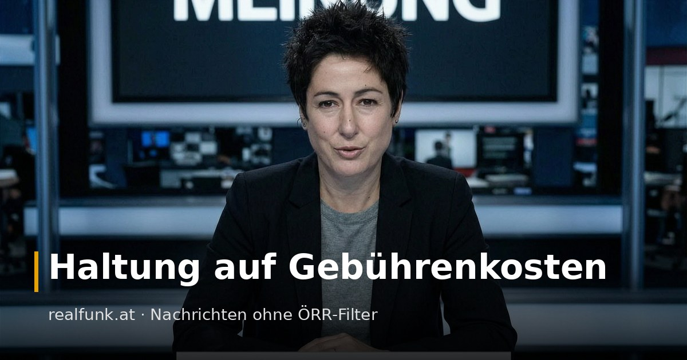

Haltung auf Gebührenkosten

Rund um den AfD-Parteitag in Erfurt lieferte der zwangsfinanzierte Rundfunk das jüngste Beispiel dafür, wie aus Haltung Nachricht wird. Im Zentrum steht seit Jahren ein Name: ZDF-Moderatorin Dunja Hayali, der immer wieder vorgeworfen wird, im Nachrichtengewand Meinung zu verbreiten. Eine Auswahl, alles belegt.
Zum Erfurter Parteitag kursierte die Deutung, die AfD habe ihren Termin bewusst in die Nähe des NSDAP-Reichsparteitags von 1926 gelegt. Zuschauer werfen dem heute-journal vor, diese Lesart am 3. Juli transportiert zu haben; den genauen Wortlaut können wir nicht mehr nachweisen, insofern bleibt es ein Vorwurf. Belegt ist das Gegenteil der These: Der MDR recherchierte den angeblichen Nazi-Bezug und verneinte ihn, der Termin kam schlicht vom Kongresszentrum. Die Andeutung historischer Nazi-Nähe steht schnell im Raum, die nüchterne Korrektur kommt, wenn überhaupt, hinterher.
Wie das im Gespräch aussieht, zeigte zuletzt ihr Parteitags-Interview mit AfD-Chefin Alice Weidel. Statt zu fragen, was die Partei in Sachsen-Anhalt oder Mecklenburg-Vorpommern plant, arbeitete sich Hayali an Sellner, Höcke und dem Extremismus-Vorwurf ab und legte dabei eigene Wertungen als Feststellungen hin. Als Weidel die Einstufung ihrer Partei zurückwies, hielt Hayali fest: „Das ist die richtige Zuschreibung des Verfassungsschutzes.“ Und als Weidel auf die Gewalt und die Blockaden rund um den Parteitag verwies, wischte die Moderatorin das beiseite: „Die Opferrolle gerne ein andermal.“ Das ist keine Fragehaltung, das ist eine Position. Ein Interview, das dem Gegenüber nichts entlocken, sondern es einordnen will, ist kein Journalismus, sondern Haltung mit Mikrofon.
Charlie Kirk, der den offenen Streit mit Andersdenkenden suchte und seine Bekanntheit auf öffentlichen Debatten aufbaute, mag polarisierend gewesen sein. Hayali aber erklärte seine Aussagen wenige Stunden nach dem Mord für „abscheulich, rassistisch, sexistisch und menschenverachtend“. Das zu bewerten war nicht ihre Aufgabe. Es steht einer Nachrichtenmoderatorin nicht zu, einen gerade Getöteten vor einem Millionenpublikum mit einem moralischen Verdikt zu überziehen. Ihre Privatmeinung darf sie am Wirtshaustisch kundtun, so oft sie will. Im gebührenfinanzierten Nachrichtenprogramm ist es kein Bericht, sondern der Versuch, dem Zuschauer die eigene Meinung als Tatsache unterzuschieben. Wer zahlen muss, ob er will oder nicht, hat Anspruch auf Nachricht, nicht auf Belehrung. Korrigiert wurde die Moderation nicht.
Es ist kein Ausrutscher, sondern Methode. Im ZDF-Morgenmagazin nannte Hayali am 2. März 2026 den Iran ein „völkerrechtswidriges Regime“, eine Formulierung, die sogar die linken NachDenkSeiten als Vermischung von Meinung und Fakt rügten, weil das Völkerrecht Regierungen gar nicht nach diesem Muster für illegitim erklärt. Meinung, im Nachrichtenton als Tatsache serviert.
Beim Hisbollah-Angriff auf das drusische Majdal Shams 2024, bei dem mindestens elf Kinder und Jugendliche starben, erwähnte Hayali die getöteten Kinder nach Kritik unter anderem der Jüdischen Allgemeinen nur im Nebensatz und rückte stattdessen den völkerrechtlichen Status der Golanhöhen in den Vordergrund. Welche Toten Empathie bekommen und welche eine Fußnote, auch das ist eine Entscheidung.
Dass es nicht an einer Person hängt, sondern am Apparat, zeigte der Fall Elon Musk. Das ZDF sendete zu den Krawallen in Großbritannien einen Beitrag, der den Eindruck vermittelte, Musk habe zur „Jagd auf Migranten“ aufgerufen. Musks Anwalt nannte das „offensichtlich unwahr“ und verlangte Unterlassung. Das ZDF kürzte den Beitrag „aus rechtlichen Gründen“. Wenn eine falsche Behauptung von jemandem mit Anwälten angegriffen wird, verschwindet sie leise aus dem Archiv. Der normale Beitragszahler, dem dieselbe Redaktion Haltung als Nachricht verkauft, hat diese Anwälte nicht.